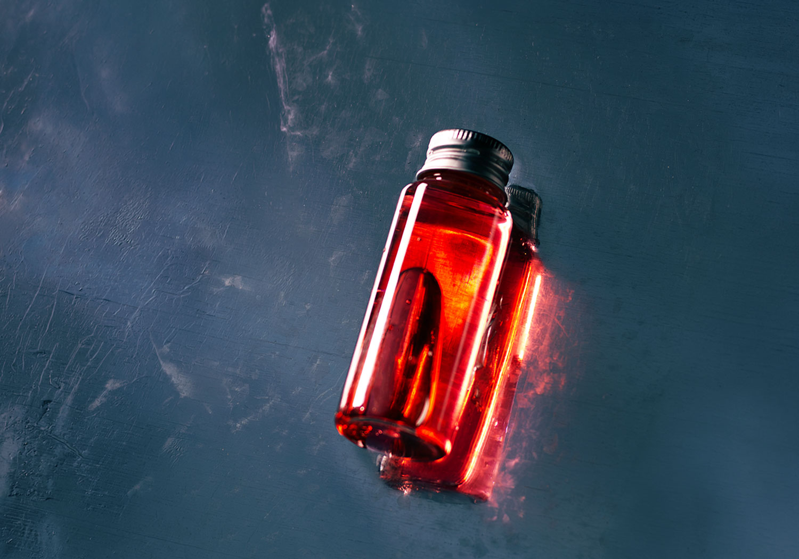

小瓶撮影
自主制作 / Photo

About
小瓶の撮影をしました。
「何の変哲もないものを、いかにかっこよく撮るか」をテーマに撮影。自宅にあった空のボトルに着色水を満たしたものを被写体とし、スチール版の上に配置。ライティングにこだわり、光と影のコントラストを強調することで、ただの空き瓶に「高級感」と「クールさ」を付与しました。撮影後はレタッチにて、質感の強調や色味の微調整を行っています。
また、後の工程でWebサイトやポスターなどのデザイン素材として使いやすいよう、意図的に余白（コピースペース）を多めに確保した構図で撮影しています。
Tools
一眼レフ、Lightroom、Photoshop
Schedule
撮影 : 40分、編集 : 1時間
← Worksへ戻る